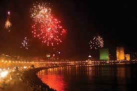

The city Mumbai, know as Bombay until 1995, is a great port city, situated on the west coast of the Indian peninsula. It is one of India's dominant urban centers and, indeed, is one of the largest and most densely populated cities in the world. Deriving its name from Mumba Devi, a goddess of the local Koli fishing peoples, Mumbai grew up around a fort established by the British in the mid-seventeenth century to protect their trading interests along India's western coast. The city's superb natural harbor provided a focal point for sea routes crossing the Arabian Sea, and Mumbai soon became the main western gateway to Britain's expanding Indian empire. The city emerged as a center of manufacturing and industry during the eighteenth century. Today, Mumbai is India's commercial and financial capital, as well as the capital city of Maharashtra State.
The culture of Mumbai is a combination of tradition, religions, cuisines, music and fine arts. Termed as ‘The city that never sleeps’, it is one of the busiest cities in India. Fun is equally important to the people of Mumbai. This is evident from the way the festivals are celebrated. Though Diwali, Eid, Holi and Christmas are celebrated enthusiastically, nothing compares to the festival of Ganesh Chaturthi. Sometime in late August or early September, Ganesh Chaturthi is a 10-day fest celebrated with grandeur and glory. Mumbai is famous for its handmade fabrics, textiles and jewellery. One can also shop at the markets like Chor Bazaar for knick knacks like antique clocks, wooden furnishings and paintings. A main reason to visit Mumbai is the food. Be it street food or local favourites or the seafood dishes, your taste buds will be thanking you for taking this trip.
Some of the well-known tourist attractions in India are found here in Mumbai. The 'Gateway of India' situated in Colaba is a renowned monument built in the Hindu-Muslim styles of architecture to honor King George V and Queen Mary. Take a peek into the world of Hindi cinema by visiting 'Film City', which is located in Goregaon. If you like water theme parks, then you must visit 'Essel World and Water Kingdom' for a day of complete adventure. Take part in the massive festivities of 'Ganesh Chathurthi,' at the 'Siddhivinayak Temple' and fulfill your dreams with the blessings of 'Lord Ganesh'. One of the finest museums in India, the 'Prince of Wales Museum' features rare artworks, sculptures, coins and lots more. Explore this extraordinary city and take home an unforgettable, typical 'Mumbai' experience. See it to believe it!